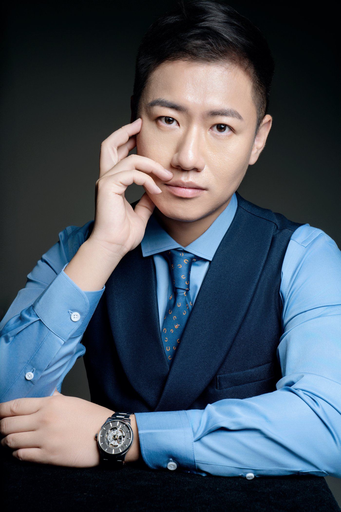
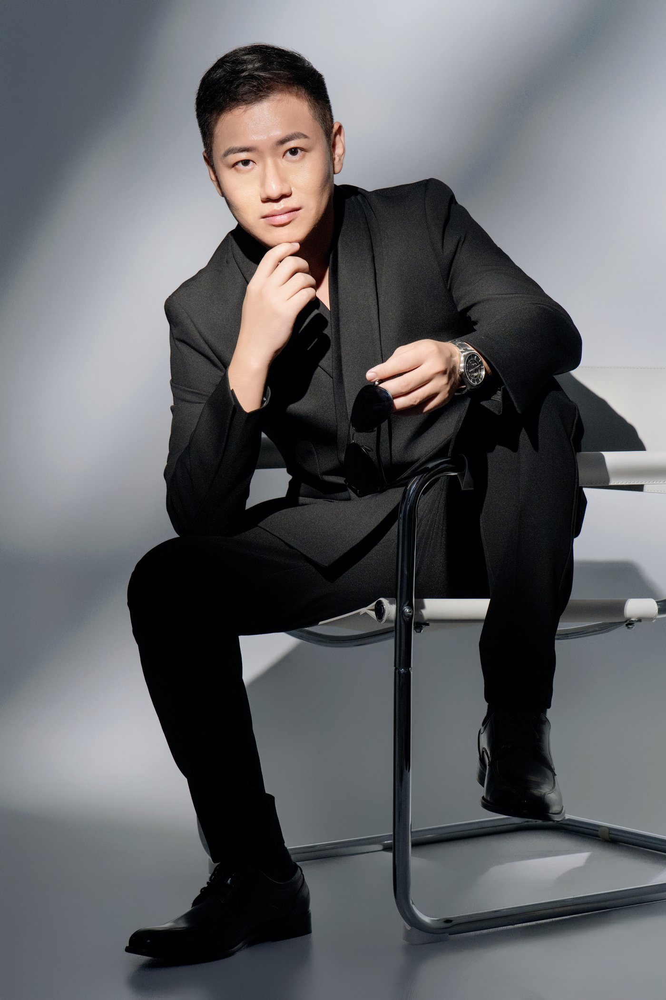
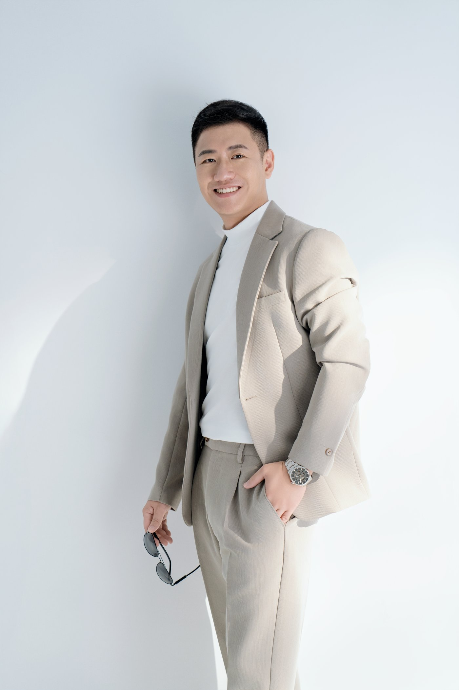
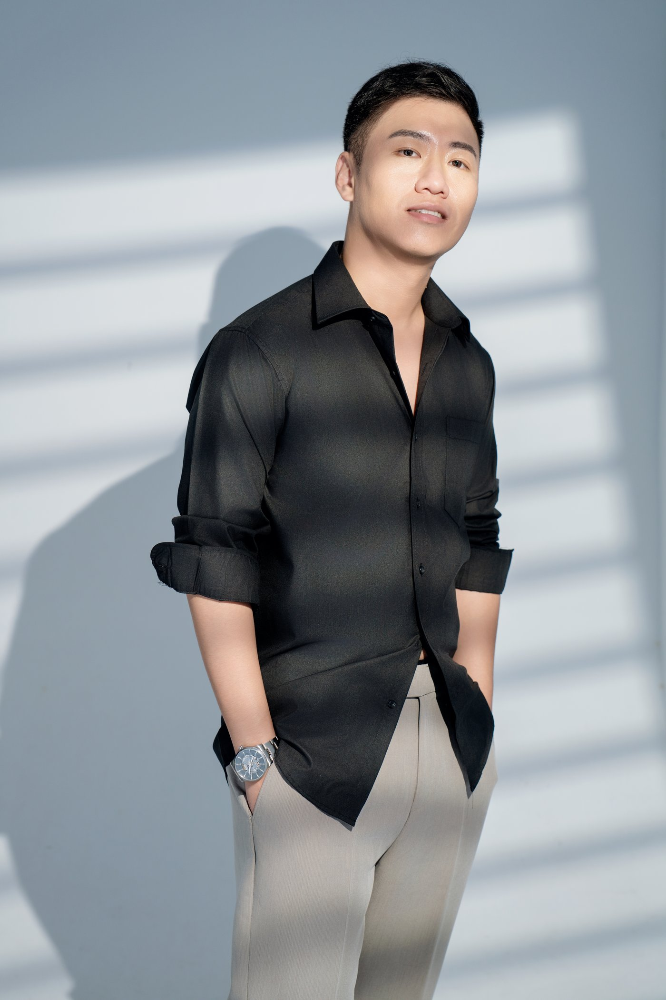

同一位律師，在事務所官網的首頁與個人介紹裡，可以有不同的樣子。
劉煒達律師是台中亞森銧國際法律事務所的所長。事務所的業務涵蓋民刑事、家事、勞資、工程與商務案件，也提供法律顧問，以及遺囑、信託等資產規劃服務。
2025 年 6 月，他在 CHUN.EN 拍攝了一組形象照，安排四套造型。後來事務所官網的首頁與所長介紹，分別用了其中兩套的照片。
四套造型，留下不同的穿著與表情
藍襯衫與深藍背心。搭配領帶，拍了灰色背景的全身照，也留下深色背景、手靠近臉部的近景。CHUN.EN 精選作品 No.01 收錄的是近景這張。

黑色西裝。全身黑色，搭配坐姿與手部動作。

米灰西裝。內搭白色高領，在明亮的白色場景裡，以笑容為主。

黑襯衫。搭配米色長褲，袖口捲起，穿著與動作都比較輕鬆。

同一套服裝，也能用表情、姿勢與構圖拍出不同版本。背心這套的全身照與近景，就是兩種不同的選擇。
照片後來用在事務所官網的哪些位置？
2026 年 11 月，亞森銧事務所官網上有兩處用了這次的照片：
| 位置 | 用的造型 | 畫面 |
|---|---|---|
| 事務所官網首頁 | 藍襯衫與深藍背心 | 灰色背景、繫領帶的全身微笑照 |
| 〈關於我們〉的所長介紹 | 米灰西裝 | 白色高領、明亮背景與笑容 |
首頁介紹的是事務所的定位與服務，所長介紹講的是律師本人的學經歷與專業。兩個位置，選了不同服裝與畫面的照片。
拍攝時留下不同服裝、表情與構圖的版本，之後選圖就有更多選擇。要放進官網時，可以再看文字放哪裡、版面比例和裁切方式，挑出適合的照片。
他對拍攝過程的回饋
非常感謝Zoey老師開拍前細心規劃、討論，開拍過程中的專業妝髮及動作指導，讓我獲得一系列專業、優質的形象照，也提升客戶對我的信任。劉煒達｜亞森銧國際法律事務所 創辦人・律師｜Google 評論
律師準備形象照，可以先整理哪些用途？
先列出照片會出現的地方：事務所官網首頁、律師介紹頁、法律顧問提案、講座或媒體介紹，再看每個地方需要的比例、構圖與表情。
有些用途可以用同一套服裝，換個表情或構圖就完成；需要另一種風格時，再安排換裝。套數跟著實際用途決定，準備起來會更有方向。
律師袍要不要拍、服裝與用途怎麼搭配，整理在〈律師形象照怎麼拍？服裝、律師袍、用途與價格〉。
常見問題
律師形象照要拍幾套？+
套數依照片用途安排。CHUN.EN 為劉煒達律師拍攝的這組形象照有四套造型；2026 年 11 月，亞森銧事務所官網首頁與所長介紹使用其中兩套。規劃時，先看哪些需求可以透過不同表情、構圖或裁切完成，再決定需要幾套服裝。
律師形象照一定要穿西裝、打領帶嗎？+
不一定。CHUN.EN 為劉煒達律師安排了背心配領帶、西裝配高領與襯衫等造型。律師形象照可以依使用位置與想呈現的樣子，選擇服裝、表情與構圖。
照片可以放在事務所官網嗎？+
可以。付清款項後，照片可以用在個人與自身事業的對外場合，例如官網、社群、名片與簡報。轉授權、轉售，或提供給第三方做商業使用，需要另外取得 CHUN.EN 的書面同意；實際使用範圍依合約約定。